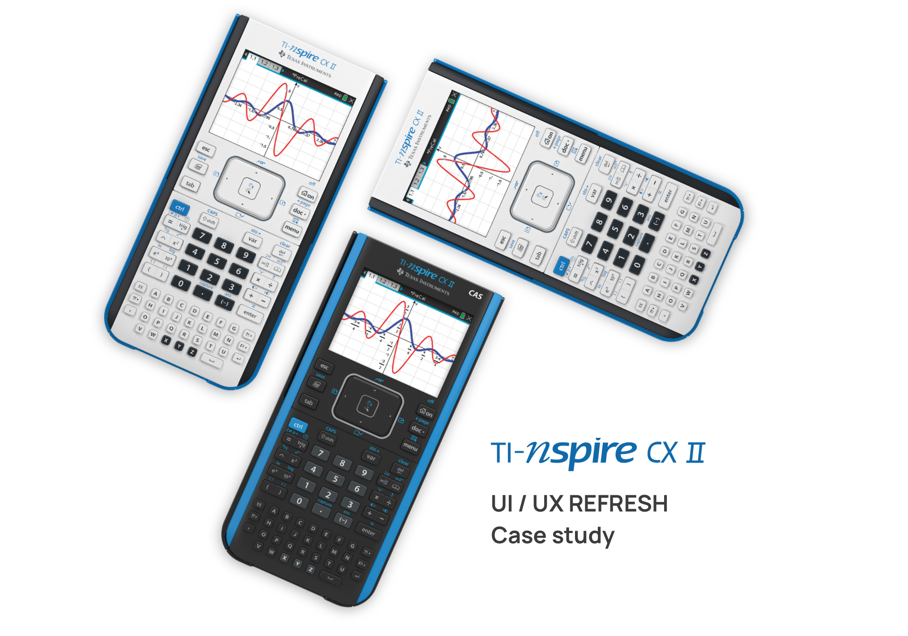
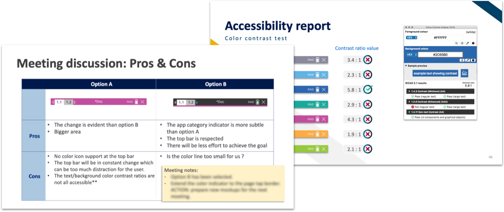

Making math and science easier to learn.
Overview
TI-nspire CX II is Textas Instruments' most sophisticated graphing calculator mainly used for educational purposes. The objective of this project was to increase the user experience of this product by unifying the UI design inconsistencies.
My Role
For this project I mostly worked on the creation of a product UI style guide that developers and project managers could use as reference to build new features in the future. Evaluating the current UI heuristics and find simple design solution to user pain points was also one of my commitments in this project. Here is a small section of what I did for this project.
Research
Personas
The design process for this project started with the creation of two “personas”: Duncan and Carlos. Duncan represents the teachers with previous knowledge in math and science. He first receives training on how to use a graphing calculator, and post this he integrates activities with the calculator into his classroom. Carlos on the other hand represents the students who attend school to learn math and science for the first time.
The most interesting thing I learned about these personas is that students and teachers are DEPENDANT from each other. This graphing calculator is a complicated device that needs proper guidance on how to use it.
User Pain Points
Hearing stories from users, teammates and project managers I identified the following user pain points:
The blue circle I drew during last class disappeared.
I don’t see the y-axis and x-axis on the screen.
I tap Shift + “mode” but nothing happens.
Can’t find the option “shapes” in the menu.
All these pain points had one thing in commun: the users were all trying to do a task in the wrong application. After the user research, the main design problem was described as the following statement.
Design problem
“The user is not able to identify the currently open app.”
Analysis
Looking for the answer to why and how the user was not able to identify the currently open app, I decided to check the user flow shown below. After looking at the user flow diagram, the reason why the user confuses the apps was clear. There were different apps screens that look 95% similar to each other.
— UI Flow

Why choose to fix this?
This problem was mostly happening between Calculator, Graph, Geometry, and Notes applications which means that 4 out of 7 apps in this calculator have this problem.
New users and non-expert users were more likely to experience these pain points. That drove me to the conclusion that there were big changes to reduce the user learning curve of the company’s most sophisticated graphing calculator.
Ideation
During an ideation process I usually do a brainstorming to explore different design solutions. Here are some ideas I had for this particular project.
Idea 1:
Use the app icon in the header
Idea 2:
Use a dynamic navbar color
Idea 3:
Use a dynamic outline color
After a discussion with the team, it was decided to add colors to the screens matching the app icon. This would create an association between the app and the screen.
Mockups
There were mainly two potential ideas that fit with the statement above. I created two high-fidelity mockups to show the team how they would look. Additionally, I made an accessibility test over option A (see image below) and a pros & cons table.
Data & Statistics: #C14E9D
Discussion
The top 2 ideas were discussed with the product management team.

Unfortunately the color application on option A failed the accessibility test and finally, option B was chosen as the final design solution.
Develop
By gathering data from actual users of smart light products and people interested in this technology I was able to identify three personas that represent the gradient of smart lights consumers. These are the highlights for each persona.
Final Result